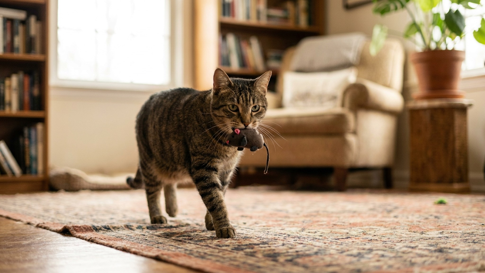

Кошка приносит «подарки»: что значит и как не отбить охоту

7 июня 2026 · 8 минут чтения · Поведение
Пять утра. На кухне — торжественное мяуканье, и у ваших ног оказывается нечто. Кошка смотрит с нескрываемой гордостью. Большинство хозяев в этот момент реагируют неправильно — и кошка это считывает. За «подарками» стоит один из сильнейших инстинктов хищника, и понять его логику значит выстроить с питомцем другой уровень доверия. Ниже — почему она это делает, как реагировать и как перенаправить охоту, не обидев кошку.
Зачем кошка вообще приносит добычу домой
Домашняя кошка — не просто пушистый диванный компаньон. Под мягкой шерстью живёт точная охотничья машина с миллионами лет эволюции. Когда она приносит добычу хозяину, работают сразу несколько механизмов.
- Инстинкт учителя. Самки диких кошек приносят полуживую добычу котятам — это обучение охоте. Кошка воспринимает хозяина как члена семьи и пытается передать ему навык. Вы, по её мнению, неважно охотитесь.
- Территориальный вклад. В прайде каждый член приносит добычу в «гнездо». Кошка вносит свою долю в общий ресурс.
- Завершение охотничьего цикла. У кошек охота состоит из фаз: выслеживание → бросок → захват → принос → поедание. Когда добыча — игрушка или реальная мышь, — цикл требует завершения. Принос хозяину закрывает петлю.
- Социальная связь. Делиться едой — высший акт доверия у кошек. Это не просто подарок, это признание вас своей стаей.
Важно понимать: кошка не издевается над вами и не пытается напугать. Она делает то, что считает правильным и важным.
Почему охотятся даже сытые домашние кошки
Это частое заблуждение: «я её хорошо кормлю, зачем ей охотиться?» Сытость и охота — разные системы в кошачьем мозге, они не конкурируют между собой. Исследования этологов показывают, что голод влияет на интенсивность охоты, но не на её наличие. Кошка будет охотиться, даже только что поев.
Особенно активны:
- Кошки с выходом на улицу или балкон — там есть реальные объекты (насекомые, птицы, мыши).
- Молодые животные до 3–4 лет — охотничий азарт на пике.
- Кошки, которым не хватает игровой стимуляции дома.
Как правильно реагировать — и что категорически не надо делать
Реакция хозяина на «подарок» формирует поведение кошки на долгое время. Неправильные ответы — это:
- Громкое отвращение, крик, отталкивание. Кошка не понимает, что вы недовольны добычей. Она считывает: «я сделала что-то ужасное». Это стресс и подрыв доверия.
- Наказание. Кошка принесла дар через минуту после события. Связь «подарок — наказание» для неё не существует. Вы просто напугаете животное без результата.
- Полное игнорирование. Лучше, чем крик, но всё равно не закрывает цикл. Кошка может стать настойчивее.
Правильная реакция — спокойное принятие:
- Поблагодарите кошку спокойным тоном: «Умница, вижу». Она считает интонацию, не слова.
- Осмотрите добычу без паники — если это живая мышь или птица, действуйте спокойно и тихо.
- Не отнимайте резко — дайте кошке «завершить ритуал». Переключите её внимание на игрушку или лакомство и спокойно уберите добычу.
Что делать, если принесли живое животное
Ситуация требует быстрых, но спокойных действий.
- Изолируйте кошку в другой комнате — мягко, без криков.
- Накройте птицу или мышь плотным полотенцем или небольшой коробкой — темнота успокаивает животное.
- Оцените состояние: если животное двигается и нет видимых повреждений, выпустите в сад или парк подальше от дома. Если ранено — контакты реабилитационного центра дикой природы вашего региона лучше иметь заранее.
- Помните: у диких животных высокий риск переноса возбудителей. Работайте в перчатках или через плотную ткань. Если кошка не привита — обсудите с ветеринаром актуальность прививок.
Перенаправление: легальная охота дома
Лучший способ снизить частоту реальных «трофеев» — дать кошке возможность охотиться по-настоящему, но на безопасные объекты. Охотничий инстинкт нельзя отключить, но им можно управлять.
- Интерактивные удочки. Имитируют птицу или мышь. 10–15 минут игры утром и вечером существенно снижают охотничий импульс. Ключевое — давать кошке «поймать» добычу несколько раз за сессию. Незакрытый цикл (охота без поимки) фрустрирует животное.
- Игрушки-норы и тоннели. Кошка «выслеживает» добычу внутри, что задействует раннюю фазу цикла.
- Игрушки-мышки с кошачьей мятой. Активируют обоняние и дают объект для «приноса». Многие кошки сами несут такую игрушку хозяину после игры — инстинкт удовлетворён безопасно.
- Кормушки-головоломки. Перекладывают часть охотничьей энергии в добычу еды. Кошка «охотится» на корм, а не на птиц.
- Уличный вольер (catio) или застеклённый балкон. Кошка наблюдает за птицами, что само по себе разряжает охотничий импульс без реального ущерба для дикой природы.
Если приносит игрушки, а не реальную добычу
Кошки, живущие исключительно в квартире, нередко приносят игрушки с теми же торжественными воплями в три ночи. Это точно тот же инстинкт. Воспринимайте это как хороший знак: кошка удовлетворяет охотничью потребность безопасно, и при этом считает вас частью своего прайда.
Что помогает снизить ночную активность:
- Активная игра за 30–40 минут до сна — разряжает накопленную энергию.
- Кормление после игры, а не до — имитирует естественный цикл «охота → добыча → еда → сон».
- Уберите самые «кричащие» игрушки на ночь, оставив только тихие.
Стоит ли ограничивать выход на улицу из-за охоты
Это сложный вопрос. Уличный доступ даёт кошке огромное обогащение среды, но одновременно создаёт риски — для неё самой и для дикой фауны. Орнитологи фиксируют, что кошки с уличным доступом уничтожают значительное количество птиц и мелких грызунов в год.
Компромиссные решения:
- Прогулки на шлейке — кошка на улице, но под контролем.
- Безопасный вольер на участке с сеткой-антикошка.
- Колокольчик на ошейнике — предупреждает птиц (снижает эффективность охоты на 30–40% по данным наблюдений).
- Ограничение выхода в периоды гнездования птиц (апрель–июнь).
Когда «подарки» указывают на недостаток чего-то
Если кошка резко участила «приносы» — это может быть сигналом, что ей не хватает:
- Игрового времени. Проверьте, сколько активных игровых сессий с хозяином в день — норма 2–3 по 10–15 минут.
- Стимуляции среды. Пустая квартира без когтеточек, укрытий и смотровых точек — бедная среда для хищника.
- Социального контакта. Кошки, которым одиноко, чаще приносят «подарки» хозяину — это попытка взаимодействия.
Обогатите среду, увеличьте игровое время, и частота ночных «концертов» с трофеями, как правило, снизится.
Материал носит информационный характер и не заменяет очную консультацию ветеринара.
← Все статьи · Открыть AnimaLife в Telegram · RSS